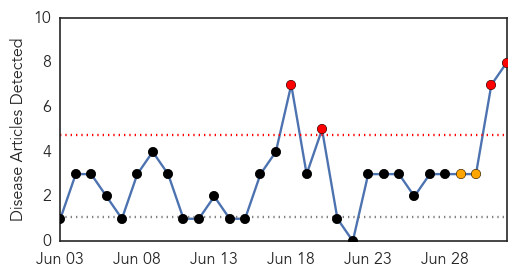
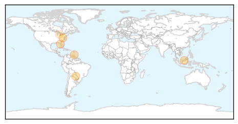

West Nile Virus
30-Day Web Trend
4 alerts, 2 warnings

30-Day Twitter Trend
0 alerts, 0 warnings

Article Locations

Article Confidences

Top Articles:
- 0.975
- Contra Costa: Birds, mosquitoes test positive for West Nile
- 0.970
- Michigan health officials say West Nile virus detected in Saginaw County
- 0.918
- EEE virus detected in Vermont mosquitoes
- 0.882
- West Nile virus found in Michigan mosquito pool
- 0.872
- Dead Birds, Mosquitoes in Contra Costa...
- 0.856
- EEE virus detected in Vermont mosquitoes
- 0.840
- Mosquitos, Dead Birds Test Positive For West Nile Virus In Contra Costa County « CBS San Francisco
- 0.755
- Fort Collins not spraying mosquitos until 2 people are infected with West Nile Virus
Top Tweets:
-
No tweets found for Jul 02, 2014
Chikungunya
30-Day Web Trend
9 alerts, 7 warnings

30-Day Twitter Trend
1 alerts, 0 warnings

Article Locations
Article Confidences

Top Articles:
- 0.999
- Sharp rise of chikungunya virus cases in the Caribbean
- 0.998
- Cayman's first chikungunya case confirmed
- 0.996
- W.Va.’s 1st case of mosquito-borne chikungunya confirmed
- 0.993
- News Scan for Jul 02, 2014
- 0.943
- First chikungunya case confirmed in Pinellas
- 0.531
- Chikungunya in Dominican Republic sickens Michigan teacher
Top Tweets:
-
No tweets found for Jul 02, 2014